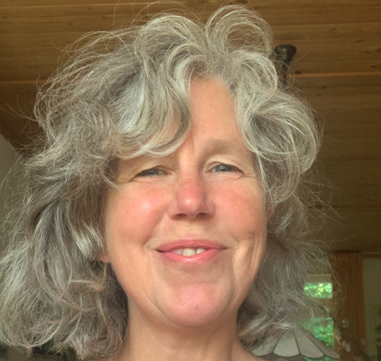

In een kleine veilige groep of met individuele begeleiding.
Presenteren leer je vooral door het te doen, niet door er alleen over te lezen. Daarom oefen je vanaf de eerste bijeenkomst in kleine stappen. Dit gebeurt individueel of in een veilige groep. Een plek waar ruimte is om dingen uit te proberen, te zoeken en soms even vast te lopen. Juist daar ontstaat groei. En met een tikje humor valt alle spanning zo van je af.
Na een kennismakingsgesprek maak ik een traject op maat, zodat het aansluit bij wat jij of jullie nodig hebben om met meer rust en zelfvertrouwen te kunnen presenteren.
Workshop van een dag — Een dag om te ervaren wat er gebeurt als je voor een groep staat, en om te merken dat het minder eng is dan gedacht. Je oefent meerdere keren, in een groep die klein genoeg blijft om iedereen aan bod te laten komen.
Training van meerdere dagen — Meer tijd, en daardoor meer diepgang. Tussen de dagen door zit ruimte om te oefenen met wat je hebt geleerd, zodat het beklijft. Aan het eind heb je een presentatie gegeven waar je zelf tevreden over bent.
Besloten traject — Voor een team, klas of bedrijf die samen wil oefenen. Omdat jullie elkaar al kennen, ligt de nadruk anders: veiligheid in een bestaande groep vraagt iets anders dan veiligheid tussen vreemden. Inhoud en duur bepalen we in overleg.
Gerichte voorbereiding op één specifiek moment waar jij gaat spreken: een conferentiepresentatie, een pitch aan de directie, een klantgesprek of een sollicitatie. We werken in jouw tempo aan de opbouw van je verhaal en je presentatiematerialen. Daarna werken we aan je houding, stem en zelfvertrouwen.
Tijdens mijn studie Onderwijskunde en Voorlichtingskunde aan Wageningen University & Research leerde ik hoe je een boodschap helder over het voetlicht brengt. Voor publiek staan wilde ik al van jongs af aan, en tijdens zang- en theateroptredens ontdekte ik hoe het is om in de schijnwerpers te staan. En ook wat spanning met je doet zodra iedereen naar je kijkt.
Tijdens verschillende trainingen systemisch werken leerde ik over het innemen van je plek in je systeem van herkomst. Diezelfde vraag speelt zodra je voor een zaal staat, want een publiek voelt binnen een paar seconden of je je plek inneemt. Maak je jezelf te klein, dan verontschuldig je je voor je eigen verhaal; maak je jezelf te groot, dan claim je een positie die je daar niet hebt.
En je neemt meer mee dan je denkt. Overtuigingen die je van huis uit hebt meegekregen, zoals doe maar gewoon of val niet op, bepalen onbewust hoe je voor een groep staat en hoe je naar je publiek kijkt. Die overtuigingen onderzoeken we samen, want zolang ze onzichtbaar blijven, blijven ze aan je trekken.
Dat vraagt om veiligheid, en daarom is dat altijd het startpunt. Pas als je weet dat het mag mislukken, durf je iets nieuws te proberen. En zodra die ruimte er is, sta je er anders. Dat is direct merkbaar voor jezelf, en zichtbaar voor je publiek.

Een vrijblijvend gesprek, zonder verplichtingen — gewoon even voelen of het bij je past.
Stuur een bericht